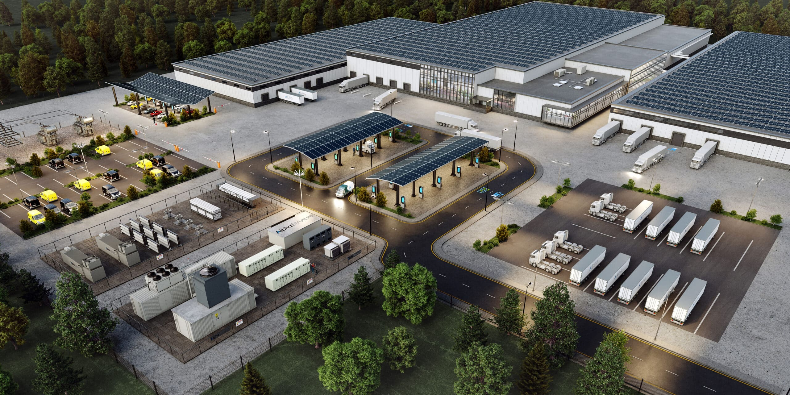

Economic Dispatch
Smooth reconstruction penalty functions and distributed predefined-time dispatch.
Hybrid AC/DC Microgrid Clusters
Ph.D. researcher at Huazhong University of Science and Technology, currently visiting Nanyang Technological University. Expecting to complete my Ph.D. in late 2026 and actively seeking Postdoctoral opportunities in Control, Optimization, and Energy Systems starting in Spring 2027. My work connects power flow optimization, distributed control, and cyber-resilient operation for networked microgrids.
Research focus
Predefined-time control with safety, optimality, and resilience guarantees.Education
Nanyang Technological University, School of Electrical and Electronic Engineering.
Advisors: Prof. Hung Dinh Nguyen and Prof. Changyun WenHuazhong University of Science and Technology, School of Artificial Intelligence and Automation.
Advisor: Prof. Yan-Wu WangTaiyuan University of Technology, College of Electrical and Power Engineering.
Advisor: Prof. Xiao-Ming Chang
Problem Space
My research targets the operational layer of microgrids: fast convergence, constraint handling, networked implementation, and robustness under limited communication or malicious data.
Research System
Smooth reconstruction penalty functions and distributed predefined-time dispatch.
Voltage, frequency, and global power sharing in hybrid AC/DC microgrids.
Multi-objective phase-angle control and voltage-safe load sharing.
DoS and FDI attack compensation for single and networked DC microgrids.
Selected Output
Click any publication to open its DOI page or a Google Scholar search. Citation badges use OpenAlex indexed counts when available.
Working Papers
I am preparing preprints and working papers targeting high-impact venues, with an emphasis on generalizable learning-based decision systems for energy management.
Positioning physics-informed reinforcement learning as a decision layer for safe, efficient, and transferable hybrid energy storage control.
Skills
Projects & Honors
Optimal frequency control strategy of microgrid based on distributed energy storage, 2024.09-2025.09.
Multi-timescale cooperative control of energy storage under emergency scenarios, 2025.8-2027.8.
Flow optimization and collaborative control for distributed regional energy networks, 2023.01-2027.12.
Conference Atlas
Trajectory
Contact